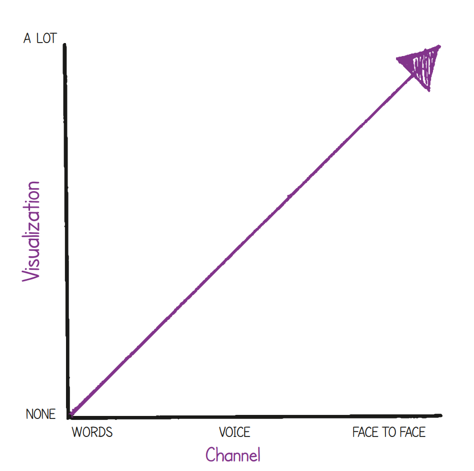

<!DOCTYPE HTML>
<html lang="en">

<head>
    <title></title>
    <meta http-equiv="Content-Type" content="text/html; charset=utf-8" />
    <link rel="stylesheet" type="text/css" href="../csharp.css" />
    <link rel="stylesheet" type="text/css" href="../master.css" />
    <link rel="stylesheet" href="https://cdn.jsdelivr.net/npm/bootstrap@4.3.1/dist/css/bootstrap.min.css"
        integrity="sha384-ggOyR0iXCbMQv3Xipma34MD+dH/1fQ784/j6cY/iJTQUOhcWr7x9JvoRxT2MZw1T" crossorigin="anonymous">


    <script src="https://code.jquery.com/jquery-3.3.1.slim.min.js"
        integrity="sha384-q8i/X+965DzO0rT7abK41JStQIAqVgRVzpbzo5smXKp4YfRvH+8abtTE1Pi6jizo"
        crossorigin="anonymous"></script>
    <script src="https://cdn.jsdelivr.net/npm/popper.js@1.14.7/dist/umd/popper.min.js"
        integrity="sha384-UO2eT0CpHqdSJQ6hJty5KVphtPhzWj9WO1clHTMGa3JDZwrnQq4sF86dIHNDz0W1"
        crossorigin="anonymous"></script>
    <script src="https://cdn.jsdelivr.net/npm/bootstrap@4.3.1/dist/js/bootstrap.min.js"
        integrity="sha384-JjSmVgyd0p3pXB1rRibZUAYoIIy6OrQ6VrjIEaFf/nJGzIxFDsf4x0xIM+B07jRM"
        crossorigin="anonymous"></script>
</head>

<body>
    <div class="container">
        <div class="panel-group">
            <div class="panel panel-primary">
                <div class="panel-heading">
                    <h1>26 Rich communication</h1>
                </div>
                <div class="panel-body">
                    <h2>26.1 PURPOSE</h2>
                    <p>The purpose of this focus area is to help avoid many of the communication problems that can occur on a
                        project, and explain the various ways in which information and knowledge can pass between project
                        stakeholders in the most effective way.</p>
                    <p>‘Communication problems’ are regularly cited as a difficulty faced by people working on projects.
                        This can often be the most significant problem encountered. Because effective communication is
                        so important when a group of people come together to create something, it needs to be
                        proactively addressed and managed throughout a project.</p>
                    <p>Effective communication is fundamental to the agile way of working but it won’t just happen; it
                        needs to be made to happen.</p>
                    <h2>26.2 FORMS OF COMMUNICATION</h2>
                    <p>Communication can take place in many ways and can operate at many levels. An email could contain
                        the start and end time for a meeting, and a conversation could involve strong views and emotions
                        about an individual’s poor performance.</p>
                    <p>Communication can take on many forms such as data, information, knowledge and wisdom (the DIKW
                        hierarchy), and it can be communicated in many ways, such as a document, a phone call, a
                        video-conference or a face-to-face conversation. Further to this, it could be taking place
                        between two people, or two groups of people or even several groups of people.</p>
                    <p>In order to achieve the most effective and productive communication possible on a project, it is
                        vital to interact in the most appropriate way, at the most appropriate time and using the most
                        appropriate method.</p>
                    <p>Communication is everywhere on a project. It could be said to be the oxygen that a project needs
                        to survive.</p>
                    <h2>26.3 THE PRINCE2 AGILE APPROACH TO COMMUNICATION</h2>
                    <p>Communication on a project will always be difficult to some degree. It is often noted that a
                        small team located in the same room and working on one product can be highly effective. Part of
                        the reason for this is that the communication between the team members is so fast and clear.</p>
                    <p>A married couple who have been together for 50 years can still have misunderstandings and
                        communication problems, so if a new project team is assembled to work on something demanding and
                        with lots of uncertainty, communication problems are inevitable.</p>
                    <p>PRINCE2 Agile focuses on this situation because in order to succeed with PRINCE2 in an agile
                        environment effective communication is essential. When communication breaks down in an agile
                        context it can be very damaging.</p>
                    <h3>26.3.1 Choosing the most appropriate channel</h3>
                    <p>One of the most effective ways to improve communication is to use the right vehicle for conveying
                        a message at the right time. Teams communicate in many different ways such as:</p>
                    <li>Using the written word in the form of documents, emails or instant messaging</li>
                    <li>Using visualizations in the form of figures or pictures</li>
                    <li>Verbally by telephone</li>
                    <li>Verbally face-to-face (perhaps by webcam).</li>
                    <p>People working on a project will be using some or all of these channels at some point and often
                        mixing them together.</p>
                    <p>To run a project in the most effective way and to get the most effective use of PRINCE2 it is
                        very important to move the communication traffic to the most effective channels, and one of the
                        best ways to do this is to use as much face-to-face communication as possible, ideally
                        accompanied by visualization. This is why a team room, where everyone is co-located, having lots
                        of information readily available on the walls, is seen as an ideal situation.</p>
                    <p>However, projects have complexity and they may involve several people and involve many teams –
                        this is far from ideal with respect to the ease of communication.</p>
                    <p>Even so, it is still essential to move the communication traffic to the faster, clearer channels.
                        The phone should be favoured over email, and face-to-face should be favoured over the phone.</p>
                    <p>Technology should be assessed with respect to making communication easier and more effective.
                        Webcams and collaboration tools can help build a multi-faceted approach to communication.</p>
                    <p>The type and frequency of communication need to be agreed by the project management team and the
                        level of formality agreed. It needs to be understood when informal channels are appropriate
                        (e.g. a regular one-toone meeting that is not recorded) and when there is a need to formally
                        record decisions (e.g. that may be needed for auditing purposes). This should be recorded in the
                        communications management strategy, which itself could be an informal document in that it is
                        displayed as part of an information radiator.</p>
                    <h3>26.3.2 The difficulties with the written word</h3>
                    <p>The biggest problem with communication lies in the fact that human beings find it relatively
                        difficult to process large amounts of information in the form of the written word. Communicating
                        between two people, or two groups of people, with a document containing many pages of text has
                        many disadvantages – for example, parts of it might not be read or the reader might be unable to
                        interact with the document.</p>
                    <div class="alert alert-primary d-flex align-items-center" role="Tip">
                                        <div style="width: 80px; height: 80px">
                                            <svg xmlns="http://www.w3.org/2000/svg" width="64" height="64" fill="currentColor"
                                                 class="bi bi-lightbulb flex-shrink-0 me-2" viewBox="0 0 16 16" role="img" aria-label="Tip:">
                                                <path
                                                        d="M2 6a6 6 0 1 1 10.174 4.31c-.203.196-.359.4-.453.619l-.762 1.769A.5.5 0 0 1 10.5 13a.5.5 0 0 1 0 1 .5.5 0 0 1 0 1l-.224.447a1 1 0 0 1-.894.553H6.618a1 1 0 0 1-.894-.553L5.5 15a.5.5 0 0 1 0-1 .5.5 0 0 1 0-1 .5.5 0 0 1-.46-.302l-.761-1.77a1.964 1.964 0 0 0-.453-.618A5.984 5.984 0 0 1 2 6zm6-5a5 5 0 0 0-3.479 8.592c.263.254.514.564.676.941L5.83 12h4.342l.632-1.467c.162-.377.413-.687.676-.941A5 5 0 0 0 8 1z"/>
                                            </svg>
                                        </div>
                        <div class="ml-3">
                            Tip<br> Why do many people use emoticons in an email or text message? Because it is easier to
                            convey feelings than it is without them and makes the message more accurate and less
                            prone to being misunderstood.
                            Typical emoticons: :) :( :D
                        </div>
                        </div>
                        <p>This is not to say that there isn’t a role for the written word. The opposite is the case. It
                            can provide clarification and is ideal for relaying factual or uncontentious information. It
                            can also allow the writer time to reflect and compose something that is carefully thought
                            out. However, when communication involves opinions or emotions, the written word is not as
                            effective as a phone call or a face-to-face conversation. Potentially, over-reliance on the
                            written word can be counter-productive.</p>
                        <p>A characteristic of the agile way of working is the way team members will try to shift the
                            communication traffic to the more effective channels (see Figure 26.1). But this takes
                            effort and a desire to work this way. It is usually a lot easier to send an email than to
                            meet with someone to discuss a problem. However, a face-toface discussion is very likely to
                            achieve a lot more in a very short space of time.</p>
                        <p>A significant point often missed with respect to face-to-face meetings or even phone calls is
                            the emotional bonding and buy-in to a discussion or decision. Email and the written word are
                            somewhat sterile and therefore this is harder to achieve.</p>
                        <p>An important point for anyone with a leadership or management role on a project is to be fully
                        aware of how a team is communicating. A vibrant and interactive team using a lot of
                        visualization should be easy to identify. Somewhat harder to identify is when a team, or some
                        members of it, are relying too heavily on such things as email.</p>
                        <figure>
                            
                            <figcaption>Fig 26-001 Factors that may improve the quality and speed of communication
                            </figcaption>
                        </figure>
                        <p>One particular example of a communication problem that can be very damaging for a project is
                            when a project manager (or team manager) primarily manages a team using email. On the
                            surface this will cause communication to be slow and open to misinterpretation. However,
                            there is a much more serious problem that is likely to emerge with this form of
                            communication, and that is that it takes the energy out of a team as people spend more time
                            on email than interacting with one another. Ultimately, this has the potential to destroy
                            the ‘heart and soul’ of a team.</p>
                        <h3>26.3.3 Getting the right blend</h3>
                        <p>Effective communication needs to be organized and planned. PRINCE2 is also very clear about
                            the need to document only when necessary. It also describes management products as
                            ‘information sets’ and not documents. This mind-set should be built on by developing a blend
                            of communication techniques that work when using agile.</p>
                        <p>When people interact face-to-face, they convey meaning with the words they use, the way they
                            say them and the body language they use when saying them.</p>
                        <p>It is important to see communication in an agile environment as a shift in emphasis, because
                            an agile team needs to work at much quicker speeds due to the iterative and responsive
                            nature of agile. This is why agile makes extensive use of workshops, face-to-face meetings,
                            visualizations in the form of models and prototypes, and video. But this does not mean there
                            isn’t a place for email or written documents (which need to be used to record decisions and
                            actions); it just means that some, or most, of this needs to be moved to the faster, clearer
                            channels whenever possible. It is also worth mentioning that a team whose members are not
                            co-located may have a greater need for email and written documents than a co-located team.</p>
                        <h2>26.4 AGILE CONCEPTS AND TECHNIQUES</h2>
                        <h3>26.4.1 Workshops</h3>
                        <p>In agile terms a workshop is generally regarded as an activity where several people come
                            together in order to achieve an objective by harnessing the interactions and creativity of
                            the participants. Typically, a workshop would last from two or three hours to a whole day,
                            but the principles behind the technique can be applied to any timescale (e.g. running a
                            15-minute retrospective).</p>
                        <p>The ideal way to run a workshop is by using a neutral facilitator who has no stake in the
                            outcome. Without a facilitator the group will need to police itself, which will be difficult
                            because participants will be concentrating on creating the content to achieve the objective
                            of the workshop.</p>
                        <h4>26.4.1.1 The basics</h4>
                        <p>In simple terms the thinking behind the workshop technique is that it is better to
                            consolidate the understanding of many people by listening to them at the same time, as
                            opposed to consolidating this understanding having listened to them separately. In a
                            workshop, different viewpoints (and their explanations) can be seen immediately by everyone
                            involved; however, the interaction needs to be managed to ensure that everyone can
                            contribute fairly.</p>
                        <figure>
                            
                            <figcaption>Img 26-011 Agile makes extensive use of workshops
                            </figcaption>
                        </figure>
                    <p>Preparation is essential for a successful workshop, and this can take as long as the workshop
                        itself. Typical steps would include:</p>
                    <li>Workshop objective Why is the workshop taking place? What is it looking to achieve?</li>
                    <li>Attendees Who should attend to ensure that the workshop objective is met?</li>
                    <li>Agenda What steps should take place during the workshop and in what order?</li>
                    <li>Logistics Covering areas such as venue, room layout, refreshments and equipment</li>
                    <li>Pre-reading What information do the participants need to know in advance to enable a workshop to run
                    as smoothly as possible?</li>
                    <p>An experienced facilitator would be familiar with these steps, and this is another reason why it
                        is preferable to use a facilitator who can work with the person authorizing the workshop (known
                        as the workshop owner), to structure the workshop in the most appropriate way.</p>
                    <p>When creating an agenda for a workshop a variety of tools and techniques are available that can
                        be used to address certain problems and situations. Again, an experienced facilitator would be
                        conversant with many of these (see Table 26.1).</p>
                    <h4>26.4.1.2 Example workshop technique 1: group work</h4>
                    <p>At some points during a workshop it may be a good idea to break the whole group into smaller
                        sub-groups. This can enable more areas to be covered and perhaps allow for quieter members of
                        the group to contribute more freely.</p>
                    <caption>Table 26.1 Possible workshop techniques</caption>
                    <table class="table">
                        <tbody>
                            <tr>
                                <td>SWOT analysis</td>
                                <td>Focuses on the four areas of strengths, weaknesses, opportunities and threats for a
                                    given situation.
                                </td>
                            </tr>
                            <tr>
                                <td>Impact/effort grids</td>
                                <td>A two-by-two (four box) grid that allows items to be positioned against two criteria
                                    on the x and y axes (e.g. cost versus effort, impact versus probability).
                                </td>
                            </tr>
                            <tr>
                                <td>Rich pictures</td>
                                <td>Using visualization to convey messages (often feelings) in a form that can use
                                    metaphors and humour.
                                </td>
                            </tr>
                            <tr>
                                <td>Prioritization with dots</td>
                                <td>The use of sticky dots or marker pen dots to quickly vote on a set of options.</td>
                            </tr>
                            <tr>
                                <td>Gap analysis</td>
                                <td>A three-step technique used to describe how something (e.g. an organization or a
                                    project) can get from one state or situation to another. The first step is to
                                    describe where it is now. Step two describes where it needs to be, and step three
                                    describes what actions need to happen in order to get from the ‘now’ state to the
                                    ‘to be’ state.</td>
                            </tr>
                            <tr>
                                <td>Brainstorming</td>
                                <td>A way of generating ideas, which normally involves sticky notes so that all ideas
                                    are initially produced without being affected by other people. Ideas are then
                                    discussed, perhaps grouped and then developed further.
                                </td>
                            </tr>
                            <tr>
                                <td>Visioning</td>
                                <td>Creating shared goals or objectives, often using visualization. Defining the overall
                                    ‘why?’
                                </td>
                            </tr>
                            <tr>
                                <td>The five whys (repeatedly asking ‘why?’)</td>
                                <td>A questioning technique to get to the root of a problem or request.</td>
                            </tr>
                            <tr>
                                <td>Dr Edward de Bono’s Six Thinking Hats</td>
                                <td>A technique to help people think in six different ways:
                                    <ul>
                                        <li>The White Hat calls for information known or needed.</li>
                                        <li>The Yellow Hat symbolizes brightness and optimism.</li>
                                        <li>The Black Hat is judgement – the devil’s advocate or why something may not
                                            work.</li>
                                        <li>The Red Hat signifies feelings, hunches and intuition.</li>
                                        <li>The Green Hat focuses on creativity.</li>
                                        <li>The Blue Hat is used to manage the thinking process.</li>
                                    </ul></td>
                            </tr>
                        </tbody>
                    </table>
                    <h4>26.4.1.3 Example workshop technique 2: sticky notes</h4>
                    <p>The use of sticky notes provides many advantages such as: they make people concise, they are
                        somewhat anonymous, they help the group create output quickly, they are movable and they are
                        visual.</p>
                    <h4>26.4.1.4 Further information</h4>
                    <p>Workshops can be used whenever needed and at any point in a project. They are often used during
                        the early stages but it would be a mistake to limit their use to just this area. The reason for
                        this is that the technique can be very helpful in several situations such as:</p>
                    <li>Planning and estimating</li>
                    <li>Reviewing</li>
                    <li>Problem-solving</li>
                    <li>Requirements-gathering</li>
                    <li>Project kick-offs</li>
                    <li>Carrying out a stakeholder analysis</li>
                    <li>Identifying and analysing risk.</li>
                    <p>Tools and techniques, and how they are used, play a significant part in workshops but perhaps the
                        most important area to get right is the group dynamics. Strong personalities and conflicting
                        views need to be managed, and this is where a neutral facilitator is perhaps most valuable.</p>
                    <p>A simple intervention by a facilitator when one person talks over another can give a clear signal
                        to the group that everyone’s views will be heard.</p>
                    <h4>26.4.1.5 Hints that may prove useful</h4>
                    <p>Groups can use workshops without a facilitator, but this would normally require the group to have
                        established and agreed its own working norms. This often takes time to establish and typically
                        exists in teams that have been together for a significant period of time.</p>
                    <p>A workshop is quite a significant event that takes a lot of time and resources to set up and run.
                        Therefore, it is always advisable to question whether a workshop is really necessary or if there
                        could be another way of achieving the objective (e.g. a small meeting).</p>
                    <p>With some workshops it is a good idea to create something collectively as a group (e.g. a plan);
                        whereas at other times it is better for specific individuals to create something and then have
                        it reviewed as a group (e.g. a business case).</p>
                    <h4>26.4.1.6 Run workshops well</h4>
                    <p>Workshops are a very powerful tool. When run correctly they can create high-quality outputs in
                        short spaces of time through motivated individuals collaborating and communicating effectively.
                        This in turn creates clarity, consensus and ownership.</p>
                    <h2>ACKNOWLEDGEMENTS AND FURTHER READING</h2>
                    <p>Marshall B. Rosenberg (2003). Nonviolent Communication: a Language of Life. Puddle Dancer
                        Press.</p>
                    <p>Zachman Framework (i.e. the who, what, when, where, why and how):
                        http://www.zachman.com/about-thezachman-framework</p>
                </div>
            </div>
        </div>
    </div>
</body>

</html>